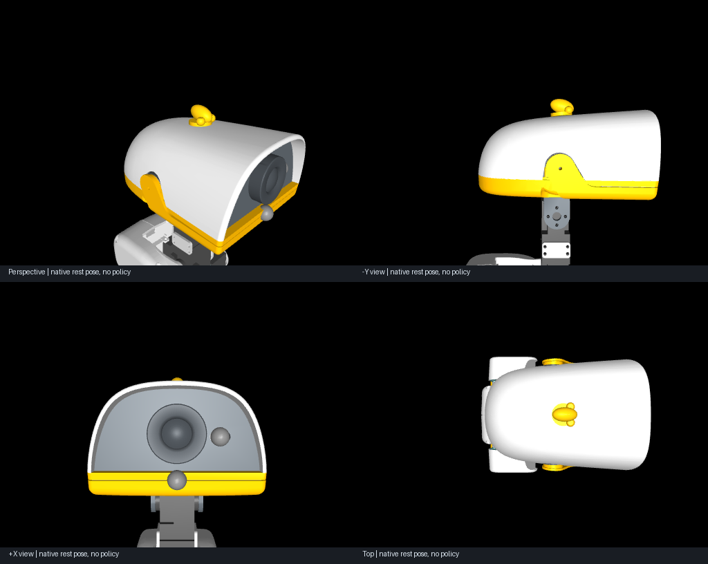
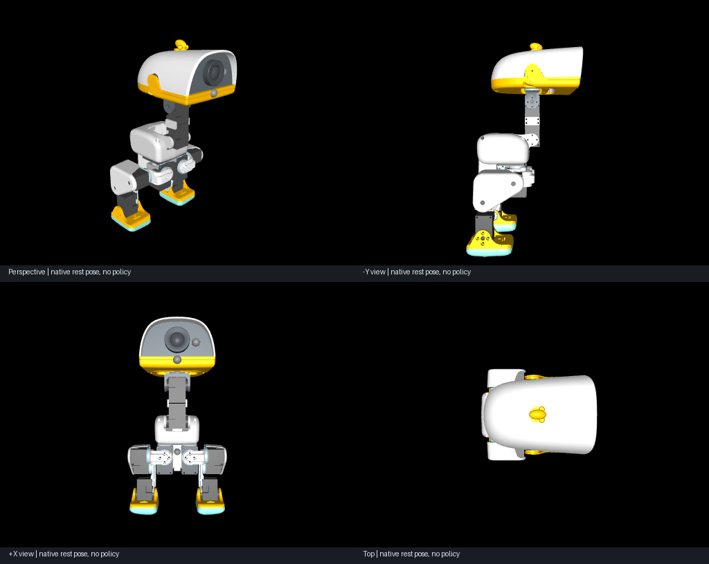
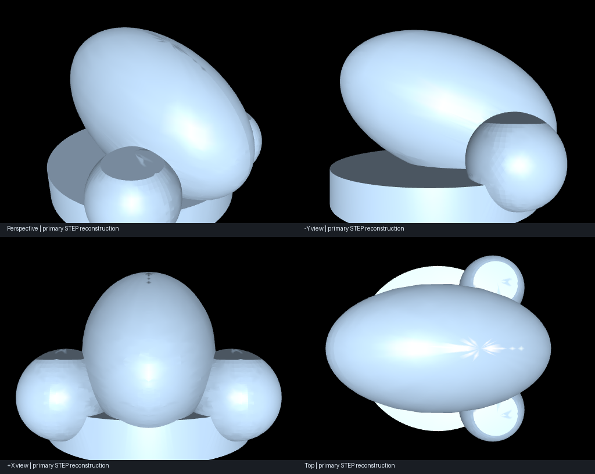
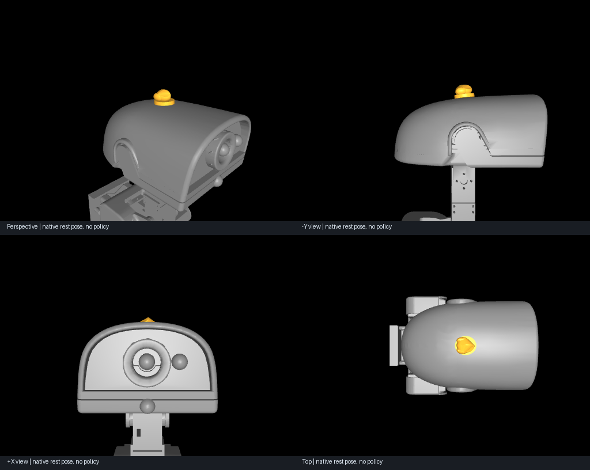
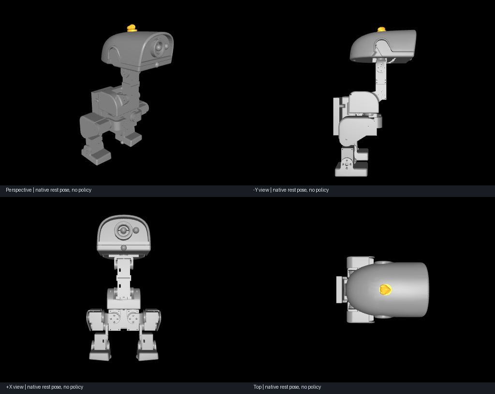
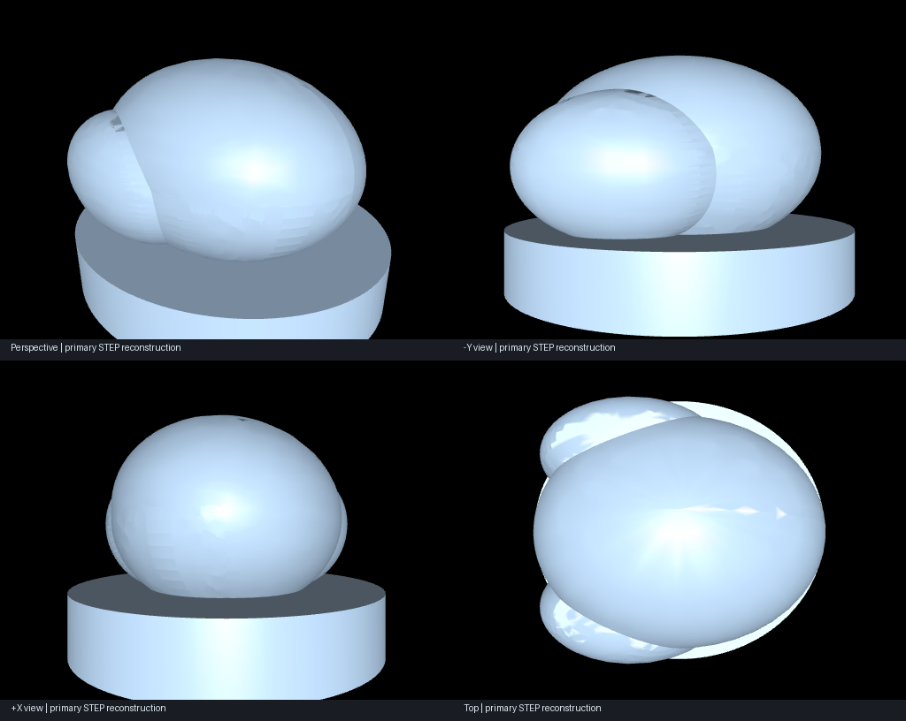

DATAFLUX DYNAMICS / FLUXKERNEL v0.10GLM 驱动的机器人个性化零件
Perception–Action Loop · GLM-5.3-Flash · 每次运行最多三轮。由模型决定造型、修订和最终选择。
附加头顶装饰件原型，保留原机器人。实际曲面贴合、固定强度、打印工艺、相机视场及行走性能尚未验证。Lean 检查有限结构合同，不能证明物理可用性。
microduck
GLM 实际调用 4 次 · 选择第 1 轮 · 新增估算质量 2.06 g

整机与独立 STEP


STEP · STL · 模型配方 · 完整选择记录 · 独立复检
xgoduck
GLM 实际调用 9 次 · 选择第 3 轮 · 新增估算质量 2.15 g

整机与独立 STEP


STEP · STL · 模型配方 · 完整选择记录 · 独立复检
272 项本地测试与隔离安装包检查通过。GLM 的 meets-brief 是模型评价，不是外部质量认证。调试中的失败、超时、中止和被替代结果均保留在运行历史；这里展示修复后同一冻结流程的两次交付运行。
CAD skill 与 OCP 8 不兼容，CAD Viewer 缺少启动脚本；图像来自独立 STEP 回读与 MuJoCo 渲染。实现与限制